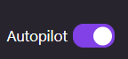

Create a browser-based game with Kiro IDE, then share it with all your friends!
AWS Summit Johannesburg · Student Zone
Welcome, Game Builder!
Today you'll build your very own web-based game using Kiro, an AI-powered development assistant. By the end of this tutorial, you'll have:
A working browser game you built yourself
Experience using AI to generate code
Your game published live on the web with a shareable URL
A blog post ready to share your creation with everyone!
🎮 What You'll Build
You'll create a fun, interactive game that runs in any web browser. No prior coding experience required! Kiro will do the heavy lifting - you just need to describe what you want.
Popular options include: Snake, Tic-Tac-Toe, Memory Match, Flappy Bird clone, or something entirely your own idea!
💡 No Coding Experience? No Worries!
This tutorial is designed for beginners. You'll use natural language to tell Kiro what you want, and Kiro writes the code for you. Think of Kiro as a skilled developer who works alongside you, with you giving all the guidance.
🖱️ Visual & Easy
Everything happens in Kiro IDE - a friendly visual environment. No command line needed.
🗣️ Just Describe It
Tell Kiro what you want in plain English. It builds the game for you.
🌍 Share Your Work
Publish a blog post on AWS Builder Center to showcase your creation.
Part 1: Setting Up Kiro IDE
Let's get Kiro IDE installed and ready to build your game.
Download the version for your operating system (Windows, Mac, or Linux)
Run the installer and follow the prompts
Launch Kiro IDE once installed
Step 2: Sign In with Your AWS Builder ID
The first time you open Kiro, it will ask you to sign in. We'll use an AWS Builder ID - it's free, takes a minute to create, and works across AWS tools such as Kiro, AWS Builder Center, and AWS re:Post.
When Kiro prompts you to sign in, choose "Sign in with AWS Builder ID"
A browser window will open at the AWS sign-in page
If you already have a Builder ID: Enter your email and sign in
If you don't already have a Builder ID: Click "Create AWS Builder ID", enter your email, verify it with the code sent to your inbox, then set a password and your name
Approve the request to connect Kiro to your Builder ID
Return to Kiro - you should now be signed in and ready to go
💡 Keep this the same Builder ID you'll use later
The same Builder ID also signs you in to builder.aws.com ↗ when you publish your blog post in Part 6.
Step 3: Create a Project Folder for Your Game
Create a new empty folder on your computer for your game:
On Windows: Right-click on your Desktop → New → Folder → Name it my-web-game
On Mac: Right-click on your Desktop → New Folder → Name it my-web-game
Tip: You can name your folder anything you like, especially if you know what game you'll build (e.g., snake-game or memory-match).
Step 4: Open Your Folder in Kiro IDE
In Kiro IDE, click File → Open Folder (or File → Open on Mac)
Navigate to your my-web-game folder
Click "Open" or "Select Folder"
You should now see your empty folder in the file explorer on the left side of Kiro IDE.
Step 5: Open the Kiro Chat Panel
Look for the Kiro chat panel - it's usually on the right side of the IDE. This is where you'll type your requests to Kiro. If you don't see it, look for a Kiro icon in the sidebar and click it.
Understanding Autopilot vs Supervised Mode
Kiro has two modes of operation. It's helpful to know the difference before you start:
🤖 Autopilot Mode
Kiro works autonomously
Automatically creates and modifies files
Faster workflow
You review changes after they're made
👁️ Supervised Mode
You approve each action
Kiro asks permission before changes
More control over what happens
Great for learning
🎯 Which Mode to Use?
Look for the Autopilot toggle in the Kiro chat panel:

For your first game, we recommend Supervised Mode so you can see exactly what Kiro is doing. You can always switch to Autopilot later!
Part 2: Build Your Game
Now the fun begins! First, pick a game to build, then describe it to Kiro and watch it come to life.
Pick a Game to Build
Here are some beginner-friendly options that work great as your first project:
Start with Tic-Tac-Toe or Snake. These are perfect for a first game - simple enough to finish in one session, but interesting enough to showcase real skills.
Your First Prompt
Click any game card above to reveal a ready-to-use prompt for that game. In the Kiro chat panel, type your chosen prompt (or your own) to get started.
🐍 Example: Snake Game
Prompt:
"Build a classic Snake game as a single HTML file that runs in a web browser. Use HTML5 Canvas for the game area. The snake should move continuously in the direction of the arrow keys. When it eats food (a red square), it grows longer and the score increases. The game ends if the snake hits the wall or itself. Show the score at the top and a game over message when the snake dies. Make it look modern and clean."
❌ Example: Tic-Tac-Toe
Prompt:
"Build a Tic-Tac-Toe game as a single HTML file. Two players take turns clicking squares in a 3x3 grid. Player 1 is X, Player 2 is O. Show whose turn it is at the top. Detect when someone wins (three in a row) or when it's a draw. Add a reset button to start a new game. Make it look modern with nice colors and smooth animations."
🧠 Example: Memory Match
Prompt:
"Build a Memory Match card game as a single HTML file. Create a 4x4 grid of cards face down. When clicked, cards flip to reveal emojis. If two flipped cards match, they stay face up. If not, they flip back after a moment. Track the number of moves and time. Show a victory message when all pairs are matched. Make it colorful and fun."
🐤 Example: Flappy Bird
Prompt:
"Build a Flappy Bird clone as a single HTML file using HTML5 Canvas. The player controls a bird that falls due to gravity, and pressing the spacebar (or tapping the screen) makes it flap upward. Green pipes with random gaps scroll from right to left, and the player must fly through the gaps. Each pipe passed increases the score. The game ends if the bird hits a pipe or the ground. Show the score at the top and a game over screen with restart option. Make it look colorful and fun."
🧱 Example: Breakout
Prompt:
"Build a Breakout arcade game as a single HTML file using HTML5 Canvas. There's a paddle at the bottom that the player moves left and right with arrow keys or mouse. A ball bounces around the screen. At the top, there's a grid of colored bricks. The ball breaks bricks on contact, and each brick broken adds to the score. The game ends when the ball falls below the paddle. Add lives (3 attempts) and a win condition when all bricks are broken. Make the visuals modern with smooth animations."
💭 Building Your Own Game Idea
Have a game idea that's not listed? Great! Here's a template you can adapt:
Template:
"Build a [YOUR GAME NAME] game as a single HTML file that runs in a web browser. The player [DESCRIBE HOW TO PLAY - controls, movement, actions]. The goal is to [WIN CONDITION]. The game ends when [LOSE CONDITION]. Include a score display and a game over screen. Use [any specific visual style you want - retro pixel art, modern minimalist, colorful, dark theme, etc.]. Make it fun and polished."
Fill in the brackets with your specific game details. The more clear you are, the better Kiro can build it!
💡 Example custom game ideas
Space shooter where you dodge asteroids
Rock-paper-scissors against the computer
Word guessing game (like Hangman or Wordle)
Reaction time test
Whack-a-mole style clicking game
💡 Tips for Great Prompts
Be specific: Mention colors, controls, and visual style
Ask for a single HTML file: Easier to share and run
Describe the goal: How does the player win or lose?
Don't worry about perfection: You can refine it later
Watch Kiro Build Your Game
After you send your prompt, Kiro will:
Analyze what you want to build
Create the necessary files (usually a single index.html)
Write the HTML, CSS, and JavaScript for your game
Explain what it's doing along the way
If you're in Supervised Mode: Kiro will ask for approval before creating files. Click "Accept" to allow the changes.
Part 3: Enhance Your Game
Once your basic game works, make it more fun by adding features. Just keep chatting with Kiro!
Ideas to Make Your Game Better
Add Sound Effects
Try this: "Add sound effects for when the player scores, when the game ends, and for other important events. Use free web audio APIs so it works without any external files."
Add a High Score System
Try this: "Add a high score system that saves the best score in the browser's local storage, so it persists between sessions. Display the high score alongside the current score."
Add Difficulty Levels
Try this: "Add difficulty levels (Easy, Medium, Hard) that the player can choose before starting. Each level should change the game speed or challenge appropriately."
Add a Start Screen
Try this: "Add a start screen with the game title, instructions on how to play, and a 'Start Game' button. Make it look welcoming and easy to understand."
Make it Mobile-Friendly
Try this: "Make the game work on mobile devices. Add touch controls (swipe or on-screen buttons) and make the layout responsive so it looks great on phones and tablets."
Improve the Look
Try this: "Improve the visual design with a modern color scheme, smooth animations, better fonts, and subtle shadows. Give it a professional polished look."
🎨 Get Creative!
Don't stop at these ideas. Ask Kiro to add anything that would make your game more fun:
Power-ups and special items
Multiple game modes
Character customization
Achievements or badges
Multiplayer support
Custom themes
Part 4: Test and Polish
Time to play your game and make sure everything works!
Step 1: Open Your Game
To play your game, you need to open the HTML file in a web browser:
In Kiro IDE's file explorer, find your index.html file (or whatever your game file is called)
Right-click the file and select "Reveal in File Explorer" (Windows) or "Reveal in Finder" (Mac)
Double-click the file to open it in your default web browser
Alternative: In Kiro IDE, you can also right-click the file and look for a "Preview" or "Open in Browser" option if available.
Your game runs on your computer, but wouldn't it be great if anyone in the world could play it just by clicking a link? Let's push your code to GitHub and publish it for free using GitHub Pages.
✨ Why Publish on GitHub Pages?
Free hosting for static sites and browser games
Shareable URL you can send to friends, family, and recruiters
Portfolio piece that lives on the web permanently
Version control so you can keep improving your game over time
Step 1: Sign In or Sign Up to GitHub
Sign In or Create a GitHub Account
If you already have a GitHub account, sign in at github.com/login ↗ and skip to Step 2.
Click the + icon in the top-right corner and choose "New repository"
Give it a name like my-web-game (or something matching your game, e.g., snake-game)
Leave it Public - GitHub Pages needs a public repo on free accounts
Do not initialize with a README, .gitignore, or license (we'll push our own files)
Click "Create repository"
Leave the page open - you'll need the URL it shows you in the next step.
Step 3: Push Your Game with Kiro's Help
Kiro can handle the Git commands for you. In the Kiro chat panel, try this prompt:
Ask Kiro to Publish Your Code
Prompt:
"Help me publish this game to GitHub. Initialize a git repository in this folder, add all the game files, create an initial commit with the message 'Initial commit: my first web game', set the branch to main, and push it to my GitHub repo at [PASTE YOUR REPO URL HERE]. If git is not installed, tell me exactly how to install it for my operating system first."
Before you send: Replace [PASTE YOUR REPO URL HERE] with the URL GitHub gave you (it looks like https://github.com/your-username/my-web-game.git).
🔐 First-time push? You'll need to authenticate.
When you push for the first time, GitHub will ask you to sign in. The easiest options:
GitHub CLI: Install from cli.github.com ↗, then run gh auth login and follow the prompts
GitHub Desktop: Download from desktop.github.com ↗ for a visual, no-terminal workflow
Ask Kiro to help if you get stuck - just paste any error messages into the chat.
Confirm Your Code Landed on GitHub
Refresh your repo page on GitHub. You should now see your index.html (and any other files) listed. If they're there, you're ready to publish.
Step 4: Enable GitHub Pages
Turn On GitHub Pages
On your repo page, click the "Settings" tab at the top
In the left sidebar, click "Pages"
Under "Build and deployment", set Source to "Deploy from a branch"
Under Branch, choose main and folder / (root)
Click Save
GitHub will take a minute or two to build and deploy your site.
Get Your Live URL
Refresh the Pages settings page after a minute. You'll see a message like:
Your site is live at https://your-username.github.io/my-web-game/
Click the URL to open your game in the browser. Congrats - your game is live on the internet!
Tip: If you see a 404 at first, wait another minute and refresh. First deployments can take a few minutes.
📌 Save Your Game's URL
Copy the live URL somewhere safe - you'll want to include it in your blog post so readers can play your game directly!
Making Updates Later
Every time you improve your game, you can redeploy in seconds:
Push New Changes
Prompt:
"Commit my latest changes with a clear message describing what I changed, then push to GitHub so my live game updates."
GitHub Pages will automatically rebuild and redeploy within a minute or two.
🛠️ Troubleshooting
Blank page or 404? Make sure your game file is named index.html at the root of your repo
Game loads but assets missing? Check that image and audio file paths are relative (e.g., images/player.png, not /images/player.png)
Push rejected? Ask Kiro to help - usually it's an authentication or branch-name issue
🌍 Part 6: Share Your Game on Builder Center
You built a game - now let's share it with the world! AWS Builder Center is a community platform where builders share their projects, tutorials, and learnings. Publishing a blog post is a fantastic way to showcase your work.
✨ Why Post to Builder Center?
Get feedback from a global community of builders
Build your portfolio - future employers can see your work
Inspire others to start their own AI-assisted projects
Join the community and connect with other developers
Step 1: Sign In to AWS Builder Center
Use the Same Builder ID You Signed In to Kiro With
Good news - you already created an AWS Builder ID in Part 1 when you signed in to Kiro. The same account works for Builder Center:
Use the same email and password as your Kiro sign-in
Complete your profile with a photo and short bio the first time you sign in
Your Builder ID works across Kiro, Builder Center, AWS Training, and AWS re:Post - one login for all of them.
Step 2: Draft Your Blog Post with Kiro
Let Kiro help you write a great blog post about your game! Ask Kiro right in the IDE:
Get a Blog Post Draft
Prompt:
"Help me write a blog post about the game I just built with you at the AWS Summit Johannesburg Student Zone. Create a file called blog-post.md with the following sections: an engaging title that mentions AWS Summit Johannesburg Student Zone, a hook introduction that mentions I built this game at the AWS Summit Johannesburg Student Zone, what I built and why, how I built it with Kiro (with example prompts I used), how I published it to GitHub Pages, challenges I faced and how I solved them, what I learned, and what's next. Include a prominent 'Play it now' link to my live GitHub Pages URL near the top, and link to my GitHub repo so readers can view the code. Make it beginner-friendly, encouraging, and around 800-1200 words. Include placeholders where I should add screenshots and where I should paste my live URL and repo URL."
Review and Personalize
Kiro will create a blog-post.md file for you. Open it and:
Read through and make it sound like you
Add your personal story - why did you want to build this?
Include specific moments that surprised or excited you
Mention this is your first game (or first Kiro project!) if applicable
A "Play it now" button or link pointing to your GitHub Pages URL
A link to your GitHub repo so readers can view or fork the code
The prompt you used to create the game
A small, interesting code snippet Kiro wrote
Preview and Publish
Use the Preview button to see how your post will look
Check all links work and images display correctly
Fix any typos (ask Kiro to proofread your text!)
Click Publish when you're ready
Blog Post Tips
📝 Show, Don't Just Tell
Include screenshots, code snippets, and the actual prompts you used. Concrete examples make posts memorable.
💬 Share the Struggle
Mention what didn't work at first. Other beginners will feel less alone when they hit similar bumps.
🎯 One Key Takeaway
What's the most important thing readers should learn? Make sure it comes through clearly.
🤝 Invite Engagement
End with a question or call to action. Ask readers to try building their own game and share it.
💡 Get Feedback Before Publishing
Ask Kiro to review your blog post before you publish:
Prompt:
"Review my blog-post.md file and give me feedback. Is it engaging? Are there any confusing parts? What could be better?"
🎉 Congratulations!
You did it! You built your very own web-based game with Kiro and are ready to share it with the world. Take a moment to appreciate what you just accomplished:
✅ Set up a professional development environment
✅ Built a working game using AI-assisted development
✅ Learned how to iterate and improve through conversation
✅ Published your game live on the web with GitHub Pages
✅ Prepared a blog post to share your creation
🚀 What's Next?
You now have the skills to keep building. Here are some ideas:
Build another game - Try one from a different genre
Add multiplayer - Ask Kiro to help you add online multiplayer
Build a game portfolio - Create a website showcasing all your games
Once your blog post is published, share it! Post the link on social media, tell your friends, and don't forget to tag your Developer Advocate Veliswa Boya so we can celebrate your work. We love seeing what our community builds!